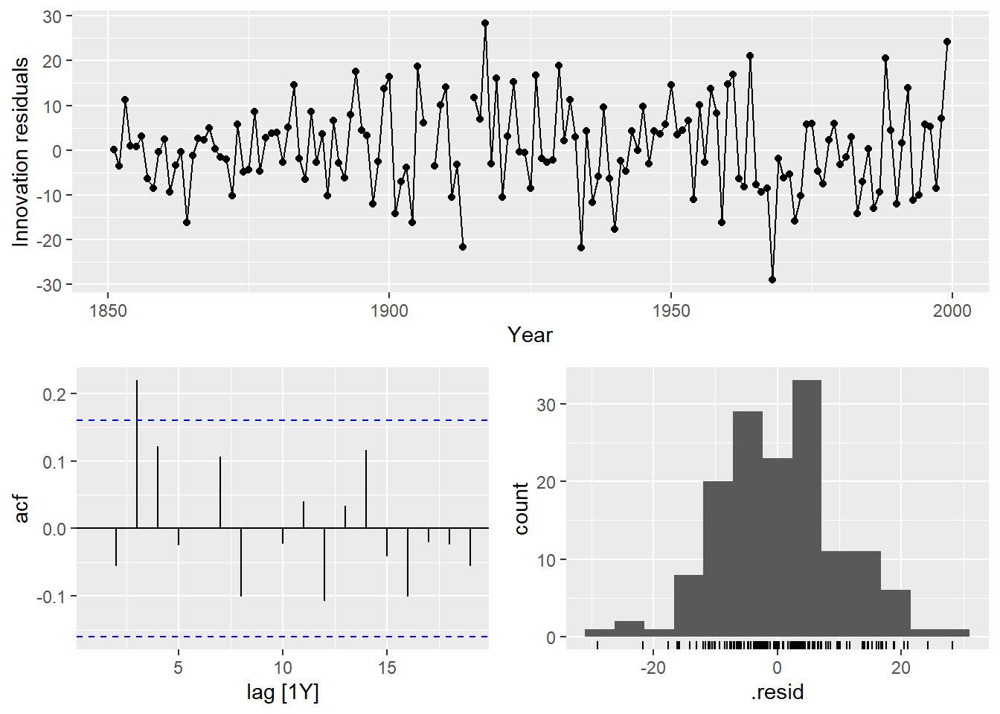
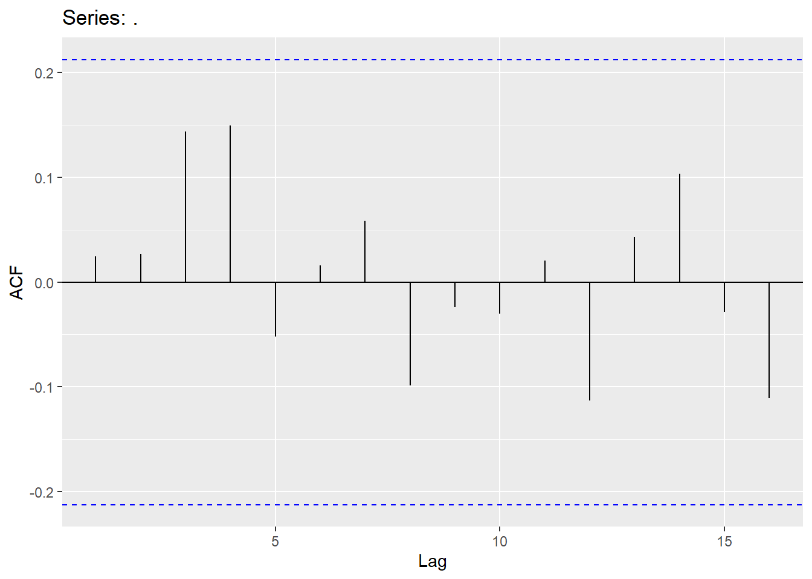
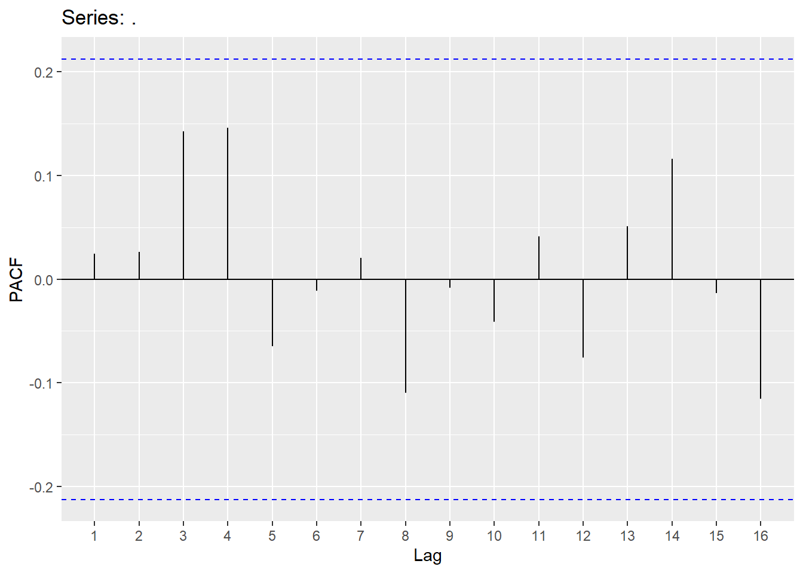
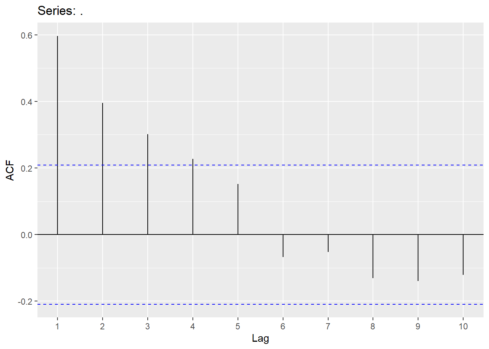
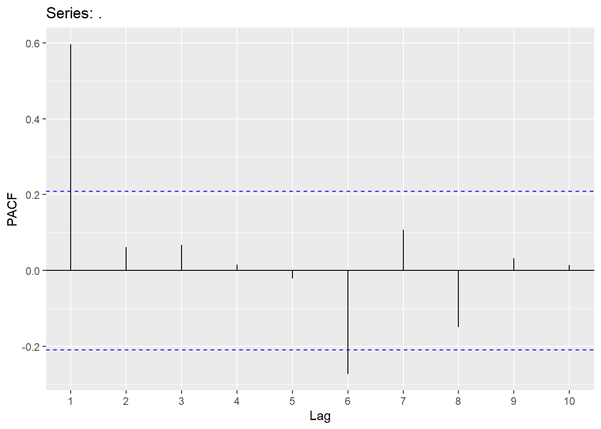
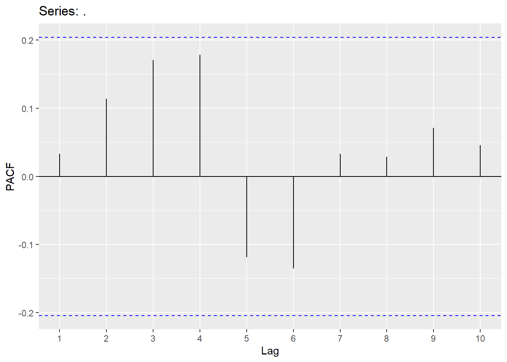

Chapter 4 ARIMA
We will not be getting into ARIMA. This chapter is fairly long and covers many different concepts in ARIMA.
4.1 Stationarity
Before we can try to model the dependency structure (the AR and MA terms), we must first have a stationary series! The ADF test is one of the most well-known and accepted test for testing stationarity. However, others have also been proposed. Within this document, we will be using the KPSS test.
Quotes.ts<-Quotes |> mutate(date = seq(ymd('2002-01-01'),ymd('2005-04-21'),by='months')) |>
mutate(month=yearmonth(date)) |> as_tsibble(index=month)
Quotes_train<-Quotes.ts %>% filter(year(date)<2005)
autoplot(Quotes_train,Quotes)+labs(title="Time Series of Monthly Stock quotes", x="Time", y="Quotes")
The following code looks into stationarity.
## # A tibble: 1 × 2
## kpss_stat kpss_pvalue
## <dbl> <dbl>
## 1 0.197 0.1## # A tibble: 1 × 1
## ndiffs
## <int>
## 1 04.2 Correlation Functions
The Acf and the Pacf in R will calculate the autocorrelation (up to the lag you specify) and the partial autocorrelation, respectively.


Since the Hurricane data set needs a difference to be stationary, we will first create the difference column and explore the correlations in that variable.
Hurricane.ts<- hurricane %>% as_tsibble(index=Year)
Hurricane_train <-Hurricane.ts %>% filter(Year <2000)
autoplot(Hurricane_train,MeanVMax)+labs(title="Time Series of Yearly Mean Velocity for Hurricanes", x="Time", y="MPH")
## # A tibble: 1 × 1
## ndiffs
## <int>
## 1 1Hurricane_train <- Hurricane_train %>% mutate(mean_diff=difference(MeanVMax))
Hurricane_train %>% features(mean_diff,unitroot_ndiffs)## # A tibble: 1 × 1
## ndiffs
## <int>
## 1 0autoplot(Hurricane_train,mean_diff)+labs(title="Differenced Mean Max Velocity", x="Time", y="Difference")## Warning: Removed 1 row containing missing values or values outside the scale range
## (`geom_line()`).
4.3 AutoRegressive Models (AR)
AutoRegressive (AR) models involve modeling the lags of Y. We can write an autoregressive model as
\[ Y_{t} = c + \phi_{1}Y_{t-1}+\phi_{2}Y_{t-2}+...\phi_{p}Y_{t-p}+\epsilon_{t} \] Where there are p lags of Y. Below is the code to fit an AR(2) model. The order in the Arima function needs the p,d,q values (p=# of AR terms, d=how many differences should be taken and q=# of MA terms).


Y.1 <-data.frame(Y)
Y.ts<-Y.1 %>% mutate(date = seq(ymd('2000-01-01'),ymd('2002-9-26'),by='day')) %>% as_tsibble(index=date)
Y_train <- Y.ts %>% filter(year(date)<2002)
autoplot(Y_train,Y)+labs(title="Time Series of Simulated Daily series", x="Time", y="Values")
## Series: Y
## Model: ARIMA(2,0,0)
##
## Coefficients:
## ar1 ar2
## 0.6399 -0.3838
## s.e. 0.0342 0.0342
##
## sigma^2 estimated as 93.75: log likelihood=-2696.14
## AIC=5398.28 AICc=5398.32 BIC=5412.07

4.4 Moving Average model (MA)
Moving average (MA) models involve modeling the lags of the error. We can write a moving average model as
\[ Y_{t} = c - \theta_{1}\epsilon_{t-1}-\theta_{2}\epsilon_{t-2}-...\theta_{q}\epsilon_{t-q}+\epsilon_{t} \] Where there are q lags of \(\epsilon\). Below is code to fit an MA(2) model.


x.1 <-data.frame(x)
x.ts<-x.1 %>% mutate(date = seq(ymd('2000-01-01'),ymd('2000-4-9'),by='day')) %>% as_tsibble(index=date)
x_train <- x.ts %>% filter(date < '2000-3-15')
autoplot(x_train,x)+labs(title="Time Series of Simulated Daily series", x="Time", y="Values")
## Series: x
## Model: ARIMA(0,0,2)
##
## Coefficients:
## ma1 ma2
## -0.2585 0.4874
## s.e. 0.1031 0.1063
##
## sigma^2 estimated as 0.2299: log likelihood=-49.88
## AIC=105.77 AICc=106.11 BIC=112.68

4.5 White noise
For residuals to exhibit white noise, they must be “independent” and normally distributed with mean 0 and constant variance. You already know how to assess normality and constant variance, however, we need to focus on assessing “independence”. We can assess if there is significant dependence through the Ljung-Box test (or graphically through ACF and PACF plots). The hypotheses being tested are
\[H_{0}:No\quad significant\quad autocorrelation\\ H_{A}:Significant\qquad autocorrletion \]
This should be assessed on a stationary time series. Looking at a stationary time series, going back 10 lags should be sufficient (this will be different when we get to seasonal models). Keep in mind that sample size does matter when assessing significance (adjust significance level accordingly).
## lb_stat lb_pvalue
## 217.3408 0.0000## Note: Y is a vector
### After fitting model:
augment(Y.ARIMA) %>% features(.innov,ljung_box, lag=10, dof = 2)## # A tibble: 1 × 3
## .model lb_stat lb_pvalue
## <chr> <dbl> <dbl>
## 1 ARIMA(Y ~ pdq(2, 0, 0) + PDQ(0, 0, 0)) 8.50 0.3864.6 Examples
We will now demonstrate these ideas on two different examples:
First example is the Quotes data set:
Quotes.ts<-Quotes |> mutate(date = seq(ymd('2002-01-01'),ymd('2005-04-21'),by='months')) |>
mutate(month=yearmonth(date)) |> as_tsibble(index=month)
Quotes_train<-Quotes.ts %>% filter(year(date)<2005)
autoplot(Quotes_train,Quotes)+labs(title="Time Series of Monthly Stock quotes", x="Time", y="Quotes")

quotes_model <-Quotes_train %>%
model(ar1 = ARIMA(Quotes ~ pdq(1,0,0) + PDQ(0,0,0)),
ma1 = ARIMA(Quotes ~ pdq(0,0,1) + PDQ(0,0,0)),
search1 = ARIMA(Quotes),
search2 = ARIMA(Quotes,stepwise = F))
quotes_model2<-as.data.frame(quotes_model)
t(quotes_model2)## [,1]
## ar1 ARIMA(1,0,0) w/ mean
## ma1 ARIMA(0,0,1) w/ mean
## search1 ARIMA(1,0,1) w/ mean
## search2 ARIMA(1,0,1) w/ mean## # A tibble: 4 × 6
## .model sigma2 log_lik AIC AICc BIC
## <chr> <dbl> <dbl> <dbl> <dbl> <dbl>
## 1 search1 2.54 -66.8 142. 143. 148.
## 2 search2 2.54 -66.8 142. 143. 148.
## 3 ma1 2.75 -68.7 143. 144. 148.
## 4 ar1 2.79 -68.8 144. 144. 148.


## # A tibble: 1 × 3
## .model lb_stat lb_pvalue
## <chr> <dbl> <dbl>
## 1 search1 3.60 0.892Second example is the Hurricane data set (mean Maximum velocity):
Hurricane.ts<- hurricane %>% as_tsibble(index=Year)
Hurricane_train <-Hurricane.ts %>% filter(Year <2000)
autoplot(Hurricane_train,MeanVMax)+labs(title="Time Series of Yearly Mean Velocity for Hurricanes", x="Time", y="MPH")
## # A tibble: 1 × 1
## ndiffs
## <int>
## 1 1Hurricane_train <- Hurricane_train %>% mutate(mean_diff=difference(MeanVMax))
Hurricane_train %>% gg_tsdisplay(mean_diff,plot_type = 'partial')## Warning: Removed 1 row containing missing values or values outside the scale range
## (`geom_line()`).## Warning: Removed 5 rows containing missing values or values outside the scale range
## (`geom_point()`).
hurr_model <-Hurricane_train %>%
model(ar3 = ARIMA(MeanVMax ~ 0 + pdq(3,1,0) + PDQ(0,0,0)),
ma2 = ARIMA(MeanVMax ~ 0 + pdq(0,1,2) + PDQ(0,1,0)),
arima32 = ARIMA(MeanVMax~0 + pdq(3,1,2) + PDQ(0,0,0)),
search1 = ARIMA(MeanVMax),
search2 = ARIMA(MeanVMax,stepwise = F))
hurr_model2<-as.data.frame(hurr_model)
t(hurr_model2)## [,1]
## ar3 ARIMA(3,1,0)
## ma2 ARIMA(0,1,2)
## arima32 ARIMA(3,1,2)
## search1 ARIMA(1,0,1) w/ mean
## search2 ARIMA(2,0,3) w/ mean## # A tibble: 5 × 6
## .model sigma2 log_lik AIC AICc BIC
## <chr> <dbl> <dbl> <dbl> <dbl> <dbl>
## 1 arima32 94.6 -539. 1090. 1090. 1108.
## 2 ma2 97.4 -542. 1091. 1091. 1100.
## 3 search2 93.1 -540. 1094. 1095. 1115.
## 4 search1 96.3 -544. 1096. 1096. 1108.
## 5 ar3 108. -549. 1106. 1106. 1118.

## Warning: Removed 2 rows containing missing values or values outside the scale range
## (`geom_point()`).## Warning: Removed 2 rows containing non-finite outside the scale range
## (`stat_bin()`).


## Warning: Removed 2 rows containing missing values or values outside the scale range
## (`geom_point()`).## Warning: Removed 2 rows containing non-finite outside the scale range
## (`stat_bin()`).
## # A tibble: 1 × 3
## .model lb_stat lb_pvalue
## <chr> <dbl> <dbl>
## 1 arima32 5.15 0.3984.7 Forecasting
Now let’s forecast each of our models:

quotes_for<-quotes_model %>% select(search1) %>% fabletools::forecast(h=4)
quotes_resid<-Quotes$Quotes[37:40]-quotes_for$.mean
MAPE<-mean(abs(quotes_resid/Quotes$Quotes[37:40]))
MAE<-mean(abs(quotes_resid))
MAPE## [1] 0.2330841## [1] 3.952702
hurr_for<-hurr_model %>% select(arima32) %>% fabletools::forecast(h=8)
hurr_resid<-hurricane$MeanVMax[150:157]-hurr_for$.mean
MAPE<-mean(abs(hurr_resid/hurricane$MeanVMax[150:157]))
MAE<-mean(abs(hurr_resid))
MAPE## [1] 0.06067555## [1] 5.9862664.8 Trend
We will now take a look at trending time series. We will use the Consume and Raleigh Housing prices index as two examples.
Consumer example using differences for trend:
consume.ts<- consume |> mutate(date2=my(date))|> mutate(month=yearmonth(date2)) |> as_tsibble(index=month)
consume_train<-consume.ts %>% filter(year(date2)<1990)
autoplot(consume_train,Disposable_income)+labs(title="Time Series of Monthly Disposable Income", x="Time", y="Thousands of Dollars")
## [1] 1consume_train<- consume_train %>%
mutate(income_diff = difference(Disposable_income))
autoplot(consume_train,income_diff)+labs(title="Time Series of Differenced Monthly Disposable Income", x="Time", y="Differences")## Warning: Removed 1 row containing missing values or values outside the scale range
## (`geom_line()`).
## Warning: Removed 1 row containing missing values or values outside the scale range
## (`geom_line()`).## Warning: Removed 1 row containing missing values or values outside the scale range
## (`geom_point()`).
consume_model <-consume_train %>%
model(ar1 = ARIMA(Disposable_income ~ pdq(1,1,0) + PDQ(0,0,0)),
ma1 = ARIMA(Disposable_income ~ pdq(0,1,1) + PDQ(0,0,0)),
ar6 = ARIMA(Disposable_income ~ pdq(6,1,0) + PDQ(0,0,0)),
ma6 = ARIMA(Disposable_income ~ pdq(0,1,6) + PDQ(0,0,0)),
search1 = ARIMA(Disposable_income),
search2 = ARIMA(Disposable_income,stepwise = F))
consume_model2<-as.data.frame(consume_model)
t(consume_model2)## [,1]
## ar1 ARIMA(1,1,0) w/ drift
## ma1 ARIMA(0,1,1) w/ drift
## ar6 ARIMA(6,1,0) w/ drift
## ma6 ARIMA(0,1,6)
## search1 ARIMA(0,1,1) w/ drift
## search2 ARIMA(0,1,1) w/ drift## # A tibble: 6 × 6
## .model sigma2 log_lik AIC AICc BIC
## <chr> <dbl> <dbl> <dbl> <dbl> <dbl>
## 1 ma1 546. -397. 799. 800. 807.
## 2 search1 546. -397. 799. 800. 807.
## 3 search2 546. -397. 799. 800. 807.
## 4 ar6 520. -392. 800. 802. 820.
## 5 ar1 571. -399. 803. 803. 811.
## 6 ma6 610. -400. 814. 815. 831.consume_modelt1 <-consume_train %>%
model(arima11 = ARIMA(Disposable_income ~ pdq(1,1,1) + PDQ(0,0,0)),
arima21 = ARIMA(Disposable_income ~ pdq(2,1,1) + PDQ(0,0,0)),
arima20 = ARIMA(Disposable_income ~ pdq(2,1,0) + PDQ(0,0,0)),
arima12 = ARIMA(Disposable_income ~ pdq(1,1,2) + PDQ(0,0,0)),
arima30 = ARIMA(Disposable_income ~ pdq(3,1,0) + PDQ(0,0,0))
)## Warning: It looks like you're trying to fully specify your ARIMA model but have not said if a constant should be included.
## You can include a constant using `ARIMA(y~1)` to the formula or exclude it by adding `ARIMA(y~0)`.
## It looks like you're trying to fully specify your ARIMA model but have not said if a constant should be included.
## You can include a constant using `ARIMA(y~1)` to the formula or exclude it by adding `ARIMA(y~0)`.## Warning: 1 error encountered for arima21
## [1] Could not find an appropriate ARIMA model.
## This is likely because automatic selection does not select models with characteristic roots that may be numerically unstable.
## For more details, refer to https://otexts.com/fpp3/arima-r.html#plotting-the-characteristic-roots## Warning: 1 error encountered for arima12
## [1] Could not find an appropriate ARIMA model.
## This is likely because automatic selection does not select models with characteristic roots that may be numerically unstable.
## For more details, refer to https://otexts.com/fpp3/arima-r.html#plotting-the-characteristic-roots## [,1]
## arima11 ARIMA(1,1,1)
## arima21 NULL model
## arima20 ARIMA(2,1,0) w/ drift
## arima12 NULL model
## arima30 ARIMA(3,1,0) w/ drift## # A tibble: 3 × 6
## .model sigma2 log_lik AIC AICc BIC
## <chr> <dbl> <dbl> <dbl> <dbl> <dbl>
## 1 arima20 551. -397. 801. 802. 811.
## 2 arima30 548. -396. 802. 802. 814.
## 3 arima11 665. -405. 816. 817. 824.


## # A tibble: 1 × 3
## .model lb_stat lb_pvalue
## <chr> <dbl> <dbl>
## 1 ar6 3.21 0.523pred_ar6 <- consume_model %>% select(ar6) %>%
fabletools::forecast(h=6)
error_ar6 <- consume$Disposable_income[89:94] - pred_ar6$.mean
MAPE_ar6 <-mean(abs(error_ar6/consume$Disposable_income[89:94]))
MAE_ar6 <- mean(abs(error_ar6))
consume_model %>% select(ar6) %>% fabletools::forecast(h=6) %>% autoplot(consume_train)pred_ma1 <- consume_model %>% select(ma1) %>%
fabletools::forecast(h=6)
error_ma1 <- consume$Disposable_income[89:94] - pred_ma1$.mean
MAPE_ma1 <-mean(abs(error_ma1/consume$Disposable_income[89:94]))
MAE_ma1 <- mean(abs(error_ma1))
consume_model %>% select(ma1) %>% fabletools::forecast(h=6) %>% autoplot(consume_train)
Raleigh example using differences:
Raleigh.ts<- Raleigh %>% mutate(quarter=yearquarter(DATE)) %>% as_tsibble(index=quarter)
Raleigh_train <-Raleigh.ts %>% filter(quarter <yearquarter("2023 Q1"))
autoplot(Raleigh_train,price_index)+labs(title="Time Series of Quarterly Housing price Index for Raleigh-Cary", x="Time", y="Index")
## # A tibble: 1 × 1
## ndiffs
## <int>
## 1 2Raleigh_train <- Raleigh_train %>% mutate(diff_price=difference(difference(price_index)))
Raleigh_train %>% gg_tsdisplay(diff_price,plot_type = 'partial')## Warning: Removed 2 rows containing missing values or values outside the scale range
## (`geom_line()`).## Warning: Removed 2 rows containing missing values or values outside the scale range
## (`geom_point()`).
Raleigh_model <-Raleigh_train %>%
model(
ma5 = ARIMA(price_index ~ pdq(0,2,5)+ PDQ(0,0,0)+0),
ar2 = ARIMA(price_index ~ pdq(2,2,0)+ PDQ(0,0,0)+0),
ma2 = ARIMA(price_index ~ pdq(0,2,2)+ PDQ(0,0,0)+0),
search1 = ARIMA(price_index~PDQ(0,0,0)),
search2 = ARIMA(price_index,stepwise = FALSE)
)
Raleigh_model2<-as.data.frame(Raleigh_model)
t(Raleigh_model2)## [,1]
## ma5 ARIMA(0,2,5)
## ar2 ARIMA(2,2,0)
## ma2 ARIMA(0,2,2)
## search1 ARIMA(1,2,3)
## search2 ARIMA(0,2,5)## # A tibble: 5 × 6
## .model sigma2 log_lik AIC AICc BIC
## <chr> <dbl> <dbl> <dbl> <dbl> <dbl>
## 1 ma5 7.65 -219. 451. 452. 466.
## 2 search2 7.65 -219. 451. 452. 466.
## 3 search1 8.36 -223. 455. 456. 468.
## 4 ar2 9.50 -229. 464. 464. 471.
## 5 ma2 10.1 -231. 468. 469. 476.


augment(Raleigh_model) %>% filter(.model=='search1') %>% features(.innov,ljung_box, lag=10, dof = 4)## # A tibble: 1 × 3
## .model lb_stat lb_pvalue
## <chr> <dbl> <dbl>
## 1 search1 7.76 0.257pred_arima123 <- Raleigh_model %>% select(search1) %>%
fabletools::forecast(h=5)
error_arima123 <- Raleigh.ts$price_index[93:97] - pred_arima123$.mean
MAPE_arima123 <-mean(abs(error_arima123/Raleigh.ts$price_index[93:97]))
MAE_arima123 <- mean(abs(error_arima123))
Raleigh_model %>% select(search1) %>% fabletools::forecast(h=5) %>% autoplot(Raleigh_train)
pred_data <- tibble(
quarter = yearquarter(seq.Date(from = as.Date("2023-01-01"),
to = as.Date("2024-01-01"),
by = "quarter")),
value = pred_arima123$.mean
)
test_data <- tibble(
quarter = yearquarter(seq.Date(from = as.Date("2023-01-01"),
to = as.Date("2024-01-01"),
by = "quarter")),
value = Raleigh.ts$price_index[93:97]
)
ggplot() +
geom_line(data = test_data, aes(x = quarter, y = value), color = "blue", linetype = "solid") +
geom_line(data = pred_data, aes(x = quarter, y = value), color = "orange", linetype = "dashed") +
labs(title = "Predicted versus Actual values",
x = "Quarter", y = "Price Index") +
theme_minimal()
Using the consumer data set and fitting a linear trend line:
consume_linear <-consume_train %>%
model(trend1 = ARIMA(Disposable_income~ trend() + pdq(0,0,0) + PDQ(0,0,0)+1)
)
report(consume_linear)## Series: Disposable_income
## Model: LM w/ ARIMA(0,0,0) errors
##
## Coefficients:
## trend() intercept
## 7.8743 2368.4594
## s.e. 0.1168 5.9841
##
## sigma^2 estimated as 792.5: log likelihood=-417.56
## AIC=841.12 AICc=841.41 BIC=848.56fitted_values <- fitted(consume_linear)
# Plot the original data and fitted values
autoplot(consume_train, Disposable_income) +
autolayer(fitted_values, .fitted, color = "blue", linetype = "dashed") +
labs(title = "Fitted Values from Linear Regression Model for Disposable Income",
x = "Time", y = "Dollars (000)") +
theme_minimal()


consume_linear <-consume_train %>%
model(trend1 = ARIMA(Disposable_income~ trend() + pdq(6,0,0) + PDQ(0,0,0)+1),
trend2 = ARIMA(Disposable_income ~ trend() + PDQ(0,0,0) +1)
)
consume_linear2<-as.data.frame(consume_linear)
t(consume_linear2)## [,1]
## trend1 LM w/ ARIMA(6,0,0) errors
## trend2 LM w/ ARIMA(1,0,0) errors## # A tibble: 2 × 6
## .model sigma2 log_lik AIC AICc BIC
## <chr> <dbl> <dbl> <dbl> <dbl> <dbl>
## 1 trend2 504. -397. 803. 803. 813.
## 2 trend1 486. -393. 805. 807. 827.Comparing the random walk with drift to the linear trend time series model for the consumer data set:


augment(consume_linear) %>% filter(.model=='trend1') %>% features(.innov,ljung_box, lag=10, dof = 6)## # A tibble: 1 × 3
## .model lb_stat lb_pvalue
## <chr> <dbl> <dbl>
## 1 trend1 3.20 0.524pred_lm <- consume_linear %>% select(trend1) %>%
fabletools::forecast(h=6)
consume_linear %>% select(trend1) %>% fabletools::forecast(h=6) %>% autoplot(consume_train)
error_lm <- consume$Disposable_income[89:94] - pred_lm$.mean
MAPE_lm <-mean(abs(error_lm/consume$Disposable_income[89:94]))
MAE_lm <- mean(abs(error_lm))
pred_rw <- tibble(
month = yearmonth(seq.Date(from = as.Date("1990-01-01"),
to = as.Date("1990-06-01"),
by = "month")),
value = pred_ar6$.mean
)
pred_lm2 <- tibble(
month = yearmonth(seq.Date(from = as.Date("1990-01-01"),
to = as.Date("1990-06-01"),
by = "month")),
value = pred_lm$.mean
)
test_data <- tibble(
month = yearmonth(seq.Date(from = as.Date("1990-01-01"),
to = as.Date("1990-06-01"),
by = "month")),
value = consume.ts$Disposable_income[89:94]
)
combined_data <- bind_rows(
test_data %>% mutate(Line = "Actual"),
pred_rw %>% mutate(Line = "Random Walk"),
pred_lm2 %>% mutate(Line = "Linear Model")
)
# Plot the data with a legend
ggplot(combined_data, aes(x = month, y = value, color = Line)) +
geom_line(linetype = "solid") +
labs(title = "Predicted versus Actual values",
x = "Date", y = "Disposable Income (000)",
color = "Legend") +
theme_minimal()Fitting a trend line to the Raleigh data set:
Raleigh_linear <-Raleigh_train %>%
model(trend1 = ARIMA(price_index~ trend() + pdq(0,0,0) + PDQ(0,0,0)+1)
)
Raleigh_linear %>% residuals() %>% ggAcf(lag.max = 10)

Raleigh_linear <-Raleigh_train %>%
model(trend1 = ARIMA(price_index~ trend() + pdq(2,0,0) + PDQ(0,0,0)+1),
trend2 = ARIMA(price_index ~ trend() + PDQ(0,0,0) + 1),
trend3 = ARIMA(price_index ~ trend() + PDQ(0,0,0) + 1,stepwise = FALSE)
)
Raleigh_linear2<-as.data.frame(Raleigh_linear)
t(Raleigh_linear2)## [,1]
## trend1 LM w/ ARIMA(2,0,0) errors
## trend2 LM w/ ARIMA(2,0,2) errors
## trend3 LM w/ ARIMA(1,0,4) errors## # A tibble: 3 × 6
## .model sigma2 log_lik AIC AICc BIC
## <chr> <dbl> <dbl> <dbl> <dbl> <dbl>
## 1 trend3 7.45 -224. 465. 466. 485.
## 2 trend2 8.53 -230. 474. 475. 491.
## 3 trend1 10.5 -239. 488. 489. 501.

augment(Raleigh_linear) %>% filter(.model=='trend2') %>% features(.innov,ljung_box, lag=10, dof = 4)## # A tibble: 1 × 3
## .model lb_stat lb_pvalue
## <chr> <dbl> <dbl>
## 1 trend2 9.50 0.147Comparing the Raleigh data set using a random walk with drift to the trend model:
pred_lm <- Raleigh_linear %>% select(trend2) %>%
fabletools::forecast(h=5)
error_lm <- Raleigh.ts$price_index[93:97] - pred_lm$.mean
MAPE_lm <-mean(abs(error_lm/Raleigh.ts$price_index[93:97]))
MAE_lm <- mean(abs(error_lm))
pred_rw <- tibble(
quarter = yearquarter(seq.Date(from = as.Date("2023-01-01"),
to = as.Date("2024-01-01"),
by = "quarter")),
value = pred_arima123$.mean
)
pred_lm2 <- tibble(
quarter = yearquarter(seq.Date(from = as.Date("2023-01-01"),
to = as.Date("2024-01-01"),
by = "quarter")),
value = pred_lm$.mean
)
test_data <- tibble(
quarter = yearquarter(seq.Date(from = as.Date("2023-01-01"),
to = as.Date("2024-01-01"),
by = "quarter")),
value = Raleigh.ts$price_index[93:97]
)
combined_data <- bind_rows(
test_data %>% mutate(Line = "Actual"),
pred_rw %>% mutate(Line = "Random Walk"),
pred_lm2 %>% mutate(Line = "Linear Model")
)
# Plot the data with a legend
ggplot(combined_data, aes(x = quarter, y = value, color = Line)) +
geom_line(linetype = "solid") +
labs(title = "Predicted versus Actual values",
x = "Date", y = "Raleigh Price Index",
color = "Legend") +
theme_minimal()
4.9 Python Code for ARMA/ARIMA models
import numpy as np
import pandas as pd
import matplotlib.pyplot as plt
from matplotlib import pyplot
from pandas import DataFrame
from statsmodels.tsa.stattools import adfuller
from statsmodels.graphics.tsaplots import plot_acf
from statsmodels.graphics.tsaplots import plot_pacf
from statsmodels.tsa.arima.model import ARIMA
quotes=pd.read_csv("Q:\\My Drive\\Fall 2017 - Time Series\\DataR\\fpp_insurance.csv")
y=pd.read_csv("Q:\\My Drive\\Fall 2017 - Time Series\\DataR\\ar2.csv")
result=adfuller(quotes["Quotes"])
print(f'ADF p-value: {result[1]}')## ADF p-value: 0.010194998749727997
## <function make_python_function.<locals>.python_function at 0x000001EE61741B40>## SARIMAX Results
## ==============================================================================
## Dep. Variable: Y No. Observations: 1000
## Model: ARIMA(2, 0, 0) Log Likelihood -3695.014
## Date: Tue, 20 Aug 2024 AIC 7398.028
## Time: 13:23:35 BIC 7417.659
## Sample: 0 HQIC 7405.489
## - 1000
## Covariance Type: opg
## ==============================================================================
## coef std err z P>|z| [0.025 0.975]
## ------------------------------------------------------------------------------
## const -0.1365 0.420 -0.325 0.745 -0.960 0.687
## ar.L1 0.6406 0.030 21.165 0.000 0.581 0.700
## ar.L2 -0.3759 0.030 -12.466 0.000 -0.435 -0.317
## sigma2 94.7853 4.193 22.604 0.000 86.567 103.004
## ===================================================================================
## Ljung-Box (L1) (Q): 0.02 Jarque-Bera (JB): 0.26
## Prob(Q): 0.89 Prob(JB): 0.88
## Heteroskedasticity (H): 1.04 Skew: -0.03
## Prob(H) (two-sided): 0.73 Kurtosis: 3.05
## ===================================================================================
##
## Warnings:
## [1] Covariance matrix calculated using the outer product of gradients (complex-step).
## 0
## count 1000.000000
## mean -0.001313
## std 9.747534
## min -33.282545
## 25% -6.475670
## 50% 0.117391
## 75% 6.510636
## max 30.318100


Checking for white noise: The first value in the Ljung-Box test is the test statistic and the second value is the p-value.
import numpy as np
import pandas as pd
import matplotlib.pyplot as plt
from matplotlib import pyplot
from pandas import DataFrame
import statsmodels.api as sm
from statsmodels.tsa.stattools import adfuller
from statsmodels.graphics.tsaplots import plot_acf
from statsmodels.graphics.tsaplots import plot_pacf
from statsmodels.tsa.arima.model import ARIMA
quotes=pd.read_csv("Q:\\My Drive\\Fall 2017 - Time Series\\DataR\\fpp_insurance.csv")
y=pd.read_csv("Q:\\My Drive\\Fall 2017 - Time Series\\DataR\\ar2.csv")
model = ARIMA(y, order=(2,0,0))
model_fit = model.fit()
print(model_fit.summary())## SARIMAX Results
## ==============================================================================
## Dep. Variable: Y No. Observations: 1000
## Model: ARIMA(2, 0, 0) Log Likelihood -3695.014
## Date: Tue, 20 Aug 2024 AIC 7398.028
## Time: 13:23:36 BIC 7417.659
## Sample: 0 HQIC 7405.489
## - 1000
## Covariance Type: opg
## ==============================================================================
## coef std err z P>|z| [0.025 0.975]
## ------------------------------------------------------------------------------
## const -0.1365 0.420 -0.325 0.745 -0.960 0.687
## ar.L1 0.6406 0.030 21.165 0.000 0.581 0.700
## ar.L2 -0.3759 0.030 -12.466 0.000 -0.435 -0.317
## sigma2 94.7853 4.193 22.604 0.000 86.567 103.004
## ===================================================================================
## Ljung-Box (L1) (Q): 0.02 Jarque-Bera (JB): 0.26
## Prob(Q): 0.89 Prob(JB): 0.88
## Heteroskedasticity (H): 1.04 Skew: -0.03
## Prob(H) (two-sided): 0.73 Kurtosis: 3.05
## ===================================================================================
##
## Warnings:
## [1] Covariance matrix calculated using the outer product of gradients (complex-step).lag_test=[3,4,5,6,7,8,9,10]
for x in lag_test:
sm.stats.acorr_ljungbox(model_fit.resid, lags=[x], model_df=2)## lb_stat lb_pvalue
## 3 0.312026 0.57644
## lb_stat lb_pvalue
## 4 0.48802 0.78348
## lb_stat lb_pvalue
## 5 0.514998 0.915584
## lb_stat lb_pvalue
## 6 4.115336 0.390622
## lb_stat lb_pvalue
## 7 4.12802 0.531135
## lb_stat lb_pvalue
## 8 4.256921 0.641952
## lb_stat lb_pvalue
## 9 4.313757 0.743012
## lb_stat lb_pvalue
## 10 6.360916 0.606873Fitting ARIMA models.
import numpy as np
import pandas as pd
import matplotlib.pyplot as plt
from matplotlib import pyplot
from pandas import DataFrame
import statsmodels.api as sm
from statsmodels.tsa.stattools import adfuller
from statsmodels.graphics.tsaplots import plot_acf
from statsmodels.graphics.tsaplots import plot_pacf
from statsmodels.tsa.arima.model import ARIMA
import pmdarima as pm
hurricane=pd.read_csv("Q:\\My Drive\\Fall 2017 - Time Series\\DataR\\hurrican.csv")
max_velocity=hurricane["MeanVMax"]
max2=max_velocity.dropna()
### Testing stationarity
result=adfuller(max2)
print(f'ADF p-value: {result[1]}')## ADF p-value: 0.0010116374636738128### Same result as auto.arima in R!
model1=pm.auto_arima(max2, start_p=0,start_q=0,max_p=5,max_q=5,seasonal=False)
model1.summary()| Dep. Variable: | y | No. Observations: | 155 |
|---|---|---|---|
| Model: | SARIMAX(0, 1, 1) | Log Likelihood | -570.040 |
| Date: | Tue, 20 Aug 2024 | AIC | 1144.080 |
| Time: | 13:23:37 | BIC | 1150.154 |
| Sample: | 0 | HQIC | 1146.547 |
| - 155 | |||
| Covariance Type: | opg |
| coef | std err | z | P>|z| | [0.025 | 0.975] | |
|---|---|---|---|---|---|---|
| ma.L1 | -0.9050 | 0.036 | -25.036 | 0.000 | -0.976 | -0.834 |
| sigma2 | 95.0278 | 10.416 | 9.123 | 0.000 | 74.612 | 115.443 |
| Ljung-Box (L1) (Q): | 0.05 | Jarque-Bera (JB): | 0.30 |
|---|---|---|---|
| Prob(Q): | 0.81 | Prob(JB): | 0.86 |
| Heteroskedasticity (H): | 2.10 | Skew: | 0.08 |
| Prob(H) (two-sided): | 0.01 | Kurtosis: | 3.15 |
Warnings:
[1] Covariance matrix calculated using the outer product of gradients (complex-step).
# Force d=0
model2=pm.auto_arima(max2, start_p=0,start_q=0,max_p=5,max_q=5,d=0,seasonal=False)
model2.summary()| Dep. Variable: | y | No. Observations: | 155 |
|---|---|---|---|
| Model: | SARIMAX(1, 0, 1) | Log Likelihood | -574.278 |
| Date: | Tue, 20 Aug 2024 | AIC | 1156.556 |
| Time: | 13:23:39 | BIC | 1168.729 |
| Sample: | 0 | HQIC | 1161.500 |
| - 155 | |||
| Covariance Type: | opg |
| coef | std err | z | P>|z| | [0.025 | 0.975] | |
|---|---|---|---|---|---|---|
| intercept | 26.5825 | 20.863 | 1.274 | 0.203 | -14.308 | 67.473 |
| ar.L1 | 0.7082 | 0.228 | 3.103 | 0.002 | 0.261 | 1.156 |
| ma.L1 | -0.5717 | 0.281 | -2.031 | 0.042 | -1.123 | -0.020 |
| sigma2 | 97.3309 | 11.556 | 8.423 | 0.000 | 74.682 | 119.979 |
| Ljung-Box (L1) (Q): | 0.23 | Jarque-Bera (JB): | 2.12 |
|---|---|---|---|
| Prob(Q): | 0.63 | Prob(JB): | 0.35 |
| Heteroskedasticity (H): | 1.75 | Skew: | 0.29 |
| Prob(H) (two-sided): | 0.05 | Kurtosis: | 2.95 |
Warnings:
[1] Covariance matrix calculated using the outer product of gradients (complex-step).
4.10 SAS Code for ARMA/ARIMA
AUGMENTED DICKEY-FULLER TESTING
proc arima data=Time.fpp_insurance plot=all; identify var=quotes nlag=10 stationarity=(adf=2); identify var=quotes(1) nlag=10 stationarity=(adf=2); run; quit;
CORRELATION FUNCTIONS
Notice no model statement!
proc arima data=Time.ar2 plot(unpack)=all; identify var=y nlag=10 outcov=Corr; estimate method=ML; run; quit;
BUILDING AN AUTOREGRESSIVE MODEL
Fit an AR2 model
proc arima data=Time.AR2 plot=all; identify var=y nlag=10; estimate p=2 method=ML; run; quit;
Add another estimate statement proc arima data=Time.AR2 plot=all; identify var=y nlag=10; estimate p=(2) method=ML; estimate p=(1,2,4) method=ML; run; quit;
BUILDING A MOVING AVERAGE MODEL
proc arima data=Time.ma2; identify var=x; estimate q=2 method=ML; run; quit;
Need to check for how to take care of trend
proc arima data=Time.Ebay9899 plot=all; identify var=DailyHigh nlag=10 stationarity=(adf=2); run; quit;
It is a random walk!! The way to model a random walk is by using differences
proc arima data=Time.Ebay9899 plot=all; identify var=DailyHigh(1) nlag=10 stationarity=(adf=2); run; quit;
BUILDING AN AUTOREGRESSIVE MOVING AVERAGE MODEL (AUTOMATIC SELECTION TECHNIQUES)
Fit an ARIMA model
proc arima data=Time.Hurricanes plot=all; identify var=MeanVMax nlag=12 stationarity=(adf=2); run; quit;
Model identification with minimum information criterion (MINIC)
proc arima data=Time.Hurricanes plot=all; identify var=MeanVMax nlag=12 minic P=(0:12) Q=(0:12); run; quit;
Model identification with smallest canonical correlation (SCAN);
proc arima data=Time.Hurricanes plot=all; identify var=MeanVMax nlag=12 scan P=(0:12) Q=(0:12); run; quit;
Model identificaiton with extended sample autocorrelation function (ESACF)
proc arima data=Time.Hurricanes plot=all; identify var=MeanVMax nlag=12 esacf P=(0:12) Q=(0:12); run; quit;
Create estimates with our ARIMA model p=2, q=3
proc arima data=Time.Hurricanes plot=all; identify var=MeanVMax nlag=12; estimate p=2 q=3 method=ML; run; quit;
FORECASTING
proc arima data=Time.Hurricanes plot=all; identify var=MeanVMax nlag=10 ; estimate p=2 q=3 method=ML; forecast lead=10; run; quit;